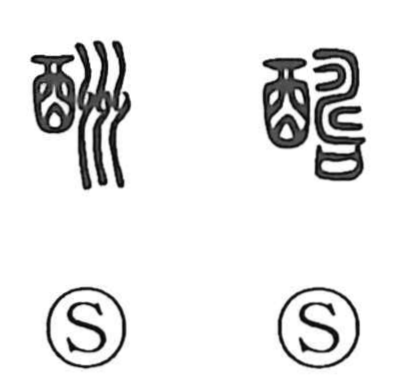

酬

Kun: mukuiru | On: shuu
to reciprocate ・ to reward ・ to reply ・ recompense
Explanation
酬 is a phono-semantic character: the wine jar element 酉 points to the world of drinking rites, while 州 supplies the sound shuu. In the Shuowen it also appears as the older form 醻, written with 壽 as the phonetic, another spelling that confirms the same reading. In early usage, as in the Book of Odes phrase 献酬交錯, it referred to the exchanging of cups at a banquet—presenting a drink and returning one in turn. From this ritual act of offering a cup in return, the sense broadened to reciprocate and reply, and further to reward or compensate, as reflected in compounds like 応酬, 報酬, and 酬恩.